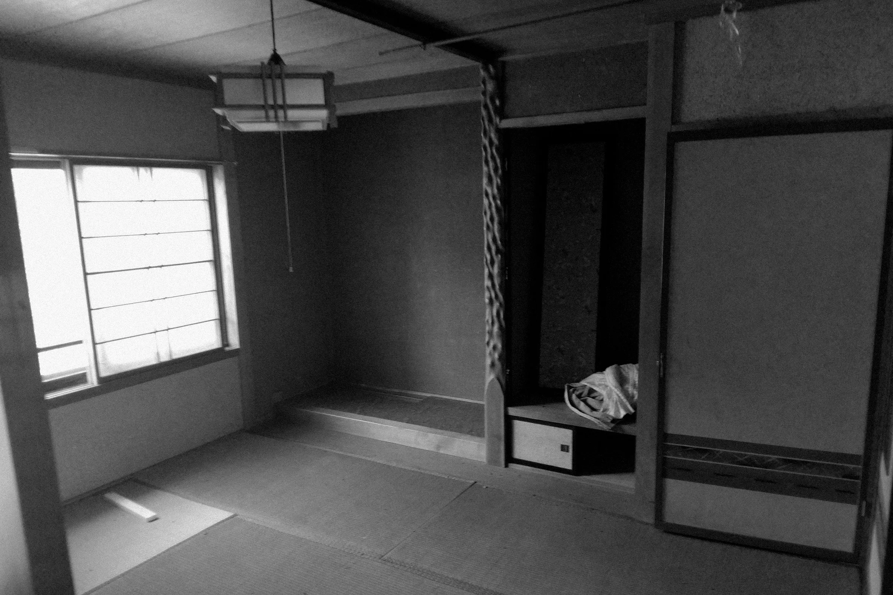
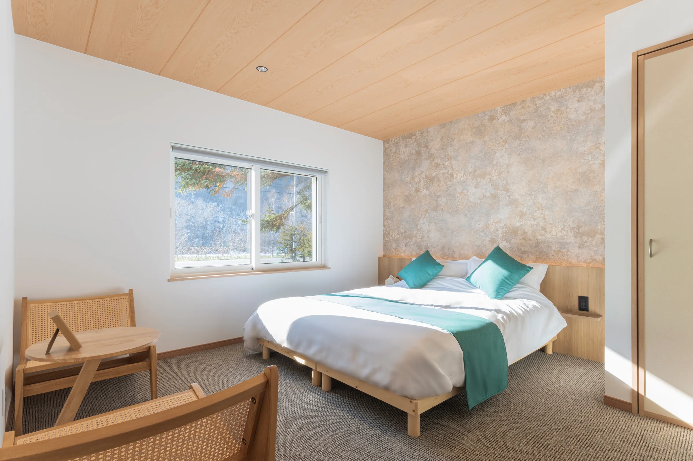
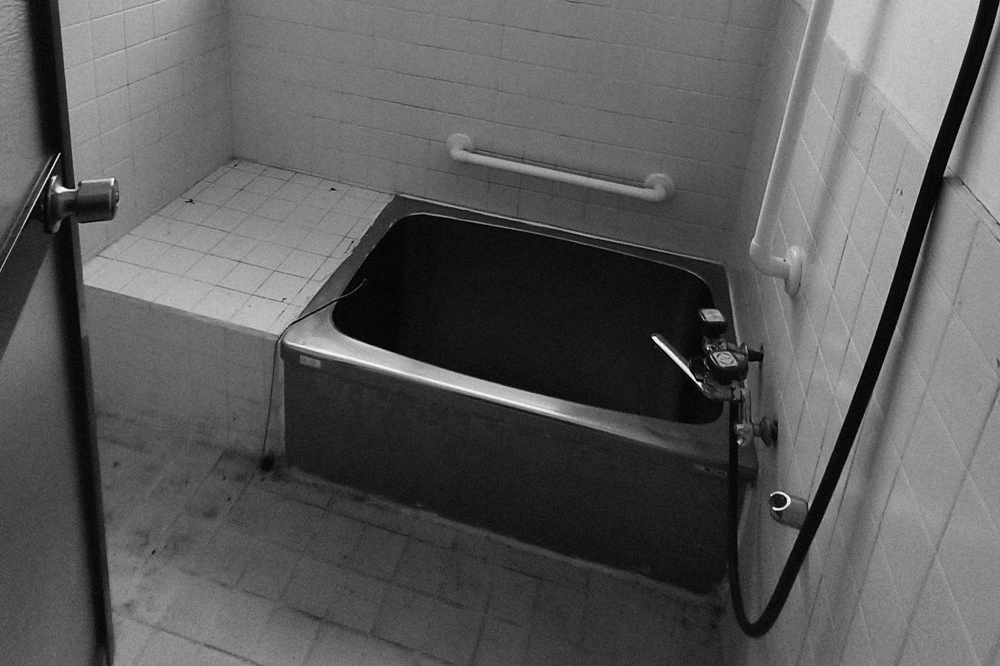
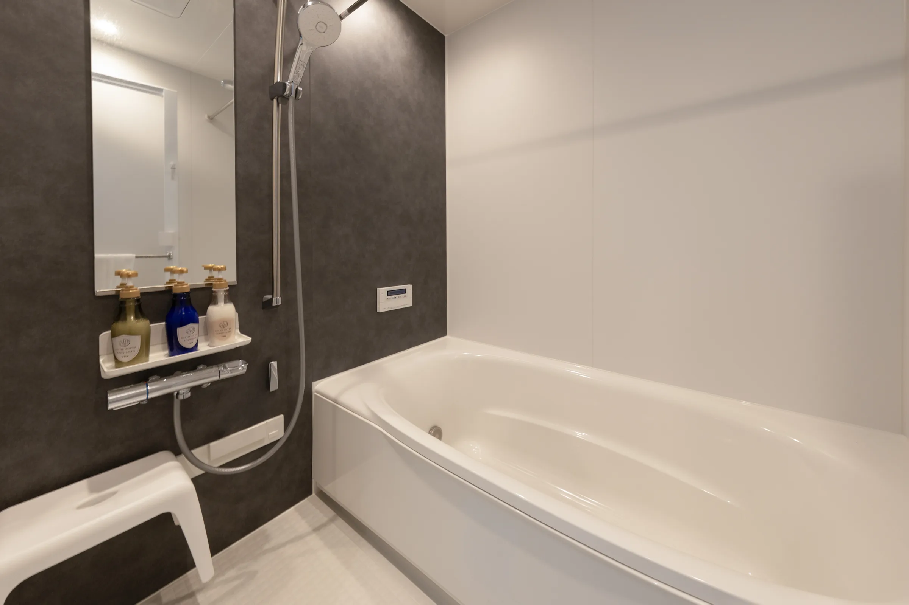
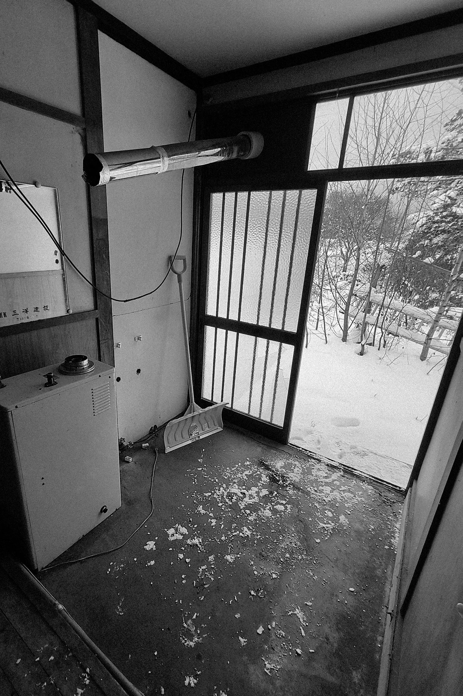
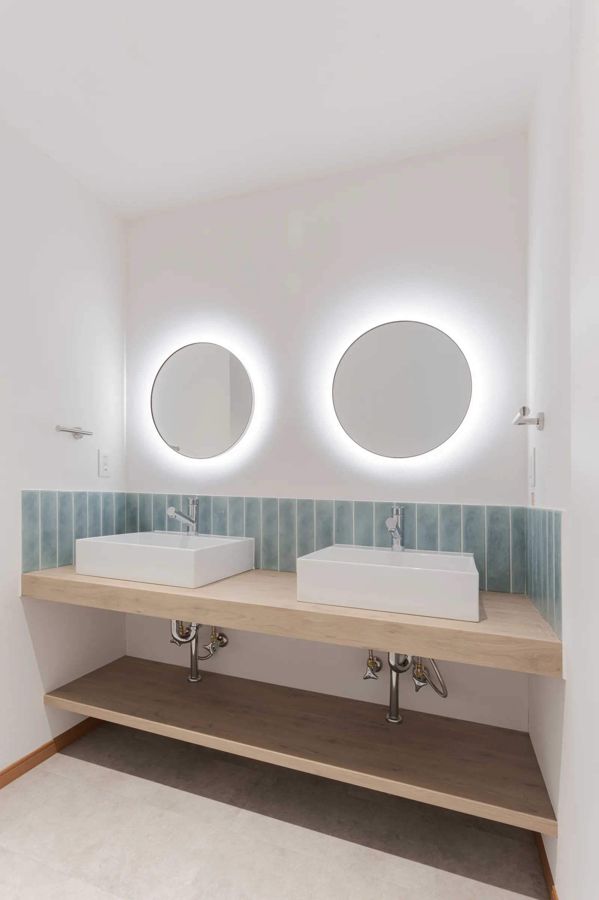
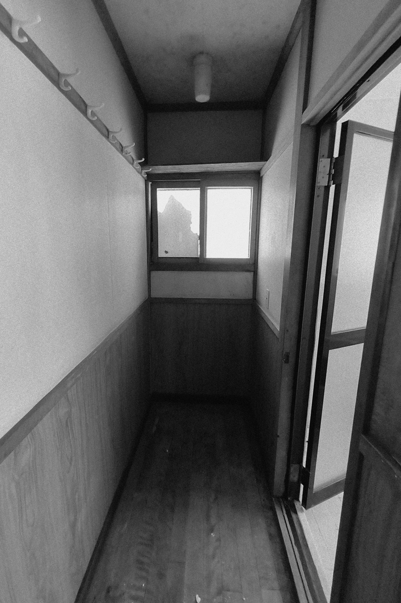
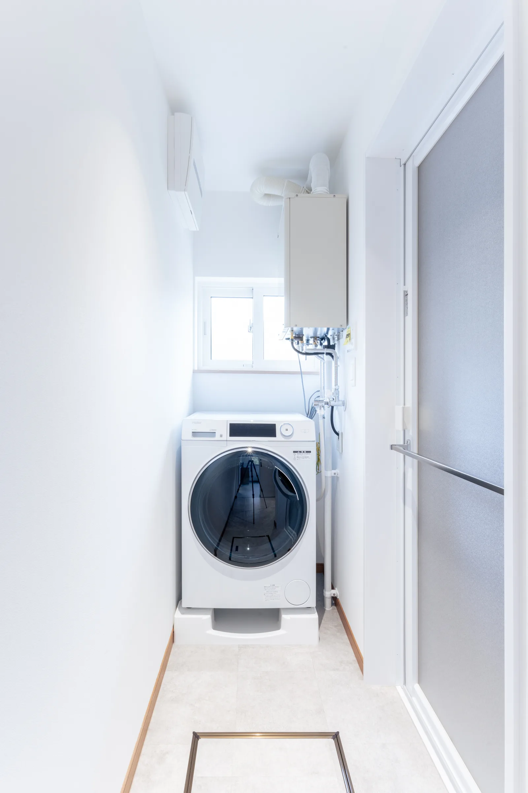
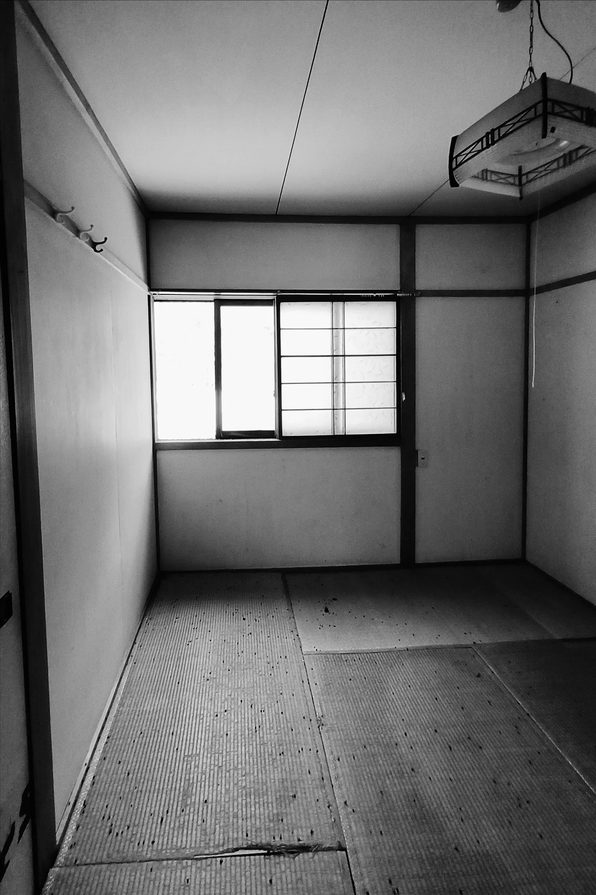
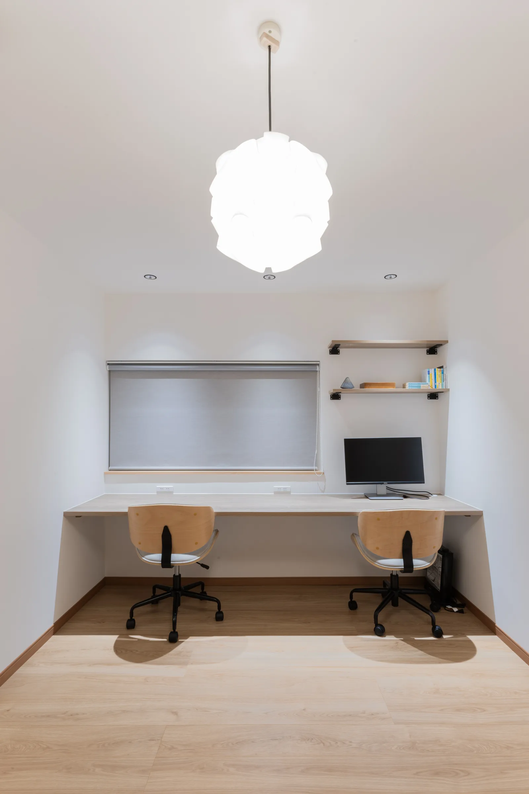

改修のデザイン監修
- デザイン監修コンセプト・プラン・素材の監修、工事会社のご紹介
- 工事費の10%〜
- 家具選定サポート
- ¥100,000〜
UBAKUDesign
宿・住宅・店舗・事務所など、建物の良さを生かした改修を、仕上がりまで。
壊して新しくするより、
あるものを、生かす。
古い建物には、新しく建てるものにはない時間の厚みがあります。UBAKU Designは、その建物の良さを残しながら、いまの暮らしや使い方に合わせて編み直す改修を、コンセプトづくりから仕上がりまで伴走します。
01Through Users' Eyes.
自分たちで宿を運営しているからこそ、泊まる人・働く人・掃除をする人まで、使う人の目線で改修を考えます。
02Numbers, Too.
見た目だけでなく、改修にかける費用と、その後の収支まで。不動産の実務の目線で、無理のない改修を一緒に決めます。
03On Your Side.
工事は請け負わず、監修とプロデュースに専念します。工事会社とのあいだに立って、仕上がりまで見届けます。
内装・設備の更新、間取りの見直しなど、柱や梁などの構造に手を加えない範囲の改修を、デザイン監修とプロデュースでお手伝いします。宿・住宅・店舗・事務所など、建物の種類は問いません。
工事はご紹介する工事会社と直接ご契約いただきます。UBAKUは工事を請け負わず、監修とプロデュースに専念します。
確認申請が必要になるような大規模な改修は、提携する建築士と連携して進めます。
UBAKU Villa 宇莫別荘
美瑛の集落・中宇莫別に建つ築約60年の建物を、フルリノベーションして一棟貸しの宿に。暗く閉じていた部屋に光を入れ、窓の外の森や丘が主役になるよう、白い壁と明るい木の床でまとめました。2026年1月開業。
木目の壁とレンガの柱の部屋を、窓の景色が映える白い空間に。


古い流し台を、ゲストが料理を楽しめるシステムキッチンに。


畳の和室を、木の天井とアクセントの壁紙の寝室に。


タイル張りの浴室を、ゆったり入れる明るい浴室に。


古い勝手口まわりを、丸い鏡が並ぶ洗面室に。


手すりの付いた古いトイレを、手洗いのある落ち着いた空間に。


細長い廊下のような場所を、洗濯機を置けるランドリーに。


畳の小部屋を、二人で使えるワークスペースに。


建物の状態と、どう使いたいかをうかがいます。
その建物と土地らしさを生かした方向性を決めます。
宿や店舗なら、改修にかける費用と収支の見通しを立てます。
間取り・色・素材・家具まで、仕上がりを監修します。
工事会社をご紹介し、仕上がりまで伴走します。
宿として開業するなら、物件選定・収支シミュレーション（無償）から、コンセプト提案、予約サイトの登録、撮影まで、UBAKU Consulting がまとめてお手伝いします。
宿の開業・運営支援の料金を見る →工事は、ご紹介する工事会社と直接ご契約いただく形です。UBAKUは監修とプロデュースの立場で、工事会社とのやりとりや仕上がりの確認まで伴走します。
はい。住宅・店舗・事務所など、建物の種類は問いません。構造に手を加えない範囲の改修であれば、お気軽にご相談ください。
確認申請が必要になるような大規模な改修は、提携する建築士と連携して進めます。まずは建物の状態をお聞かせください。
コンセプトづくり、プラン・色・素材の監修、工事会社のご紹介と、仕上がりまでの伴走にかかる費用です。工事そのものの費用は、工事会社と直接ご契約いただきます。
はい。宿の開業・運営や事業の組み立ては UBAKU Consulting が担当します。改修とあわせてご相談いただけます。
UBAKU Consulting
宿の開業・運営、不動産開発や新規事業のご相談は、UBAKU Consulting が承ります。改修とあわせて、事業の組み立てからご相談いただけます。
建物のこと、お聞かせください。
古い建物を生かしたい、宿や店舗に変えたい、どこから手をつければいいかわからない。まだ形になっていない思いつきでも大丈夫です。